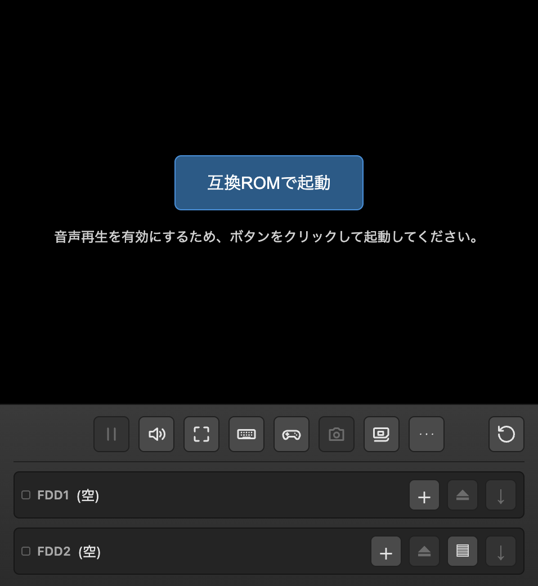
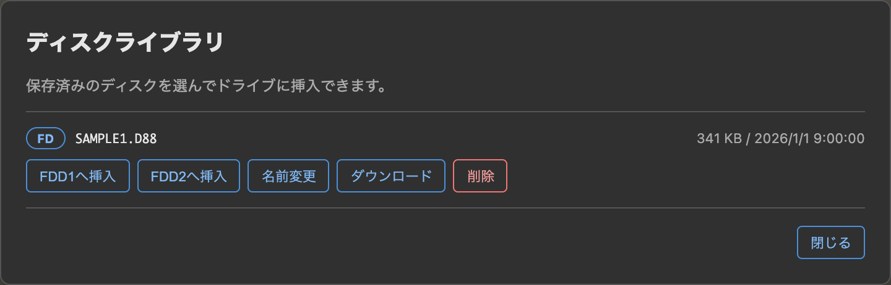
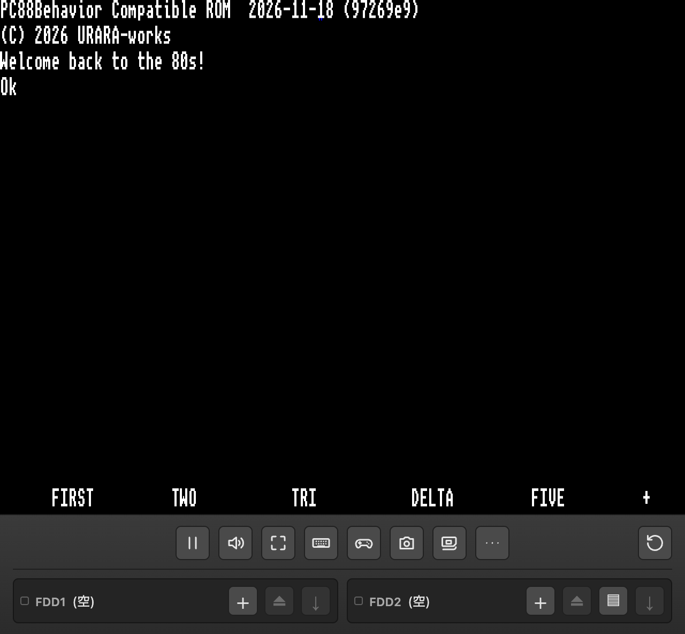
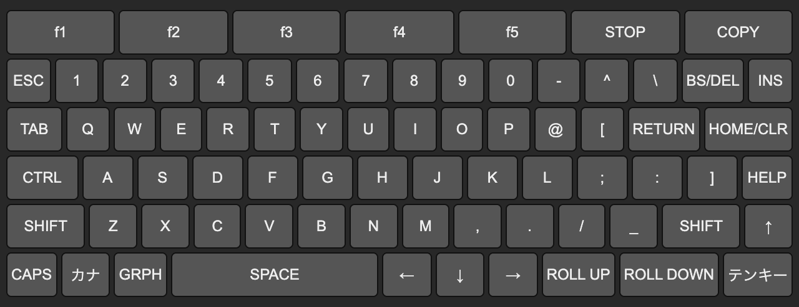
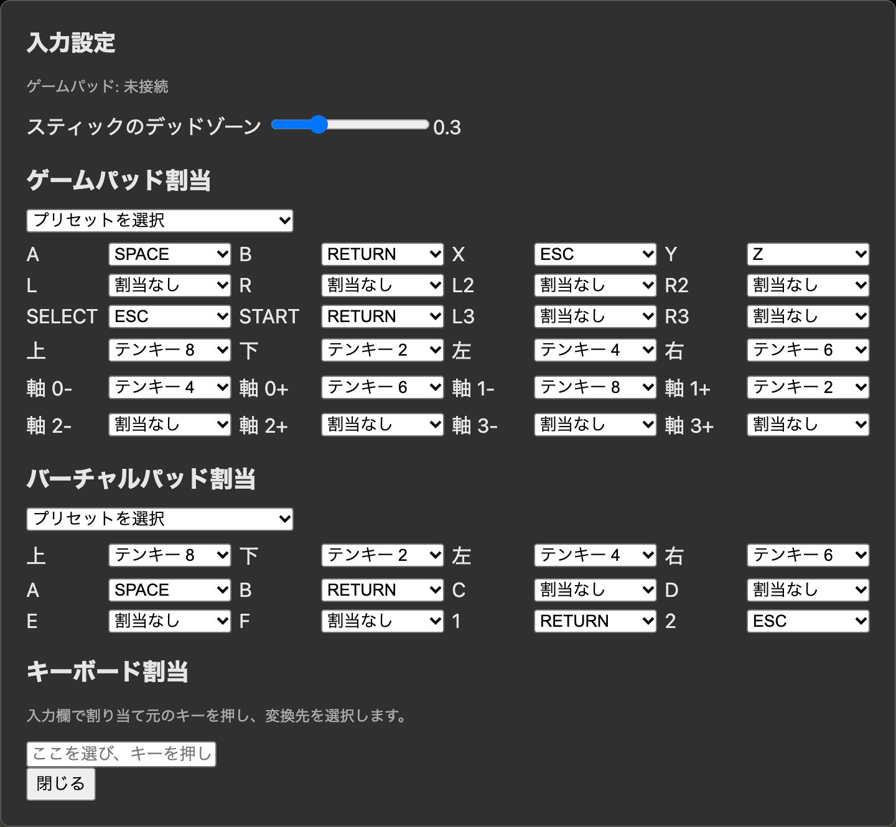

はじめに
WebQ88 は、PC-8801 の動作をブラウザ上で再現する Web プレイヤーです。エミュレーションには QUASI88 を libretro 化した QUASI88-libretro の wasm ビルドを使っています。公式ROMの代わりに クリーンルームで作った互換ROM(PC88Behavior)を同梱しているので、URL を開くだけで N88-BASIC 互換の画面まで起動します。
PC-8801 の公式ROM・市販ソフトのディスクイメージは同梱していません。お手元のディスク イメージ(D88 など)は、ドライブ行へドラッグ＆ドロップするなどして読み込めます。 読み込んだディスクはサーバーへ送信されず、ブラウザの中だけで扱われます。
Introduction
WebQ88 is a web player that reproduces the PC-8801 in your browser. It runs a WebAssembly build of QUASI88-libretro, a libretro port of QUASI88. Instead of the official ROM it bundles a compatible ROM (PC88Behavior) written in a clean-room fashion, so just opening the URL boots to an N88-BASIC-compatible screen.
Official PC-8801 ROMs and commercial software disk images are not bundled. You can load your own disk images (D88 and so on) by, for example, dragging and dropping them onto a drive row. Loaded disks are never sent to a server; they are handled only inside your browser.
起動する

- ページを開くと「互換ROMで起動」ボタンが表示されます。
- ボタンをクリックすると起動します。音声を有効にするため、起動にはこのクリックが必要です。
- 起動後、画面をクリックするとキーボード操作が画面に戻ります。
URLに run=1 を付けると、ボタンを押さずに自動で起動します(→「URLでディスクを指定して起動」)。
Starting the emulator

- When the page opens, a "Boot with compatible ROM" button is shown (labeled in Japanese in the player).
- Click it to start. This click is required because browsers only allow audio after a user action.
- After it starts, click the screen to return keyboard focus to it.
Add run=1 to the URL to start automatically without pressing the button (see
"Boot with disks specified in the URL").
画面表示（4:3 / ドット等倍 / 補間）
既定では、実機のモニタのように4:3で表示します。ツールバーの「…」(その他の操作)メニューで 次の設定を変えられます。設定はブラウザに保存されます。
- 表示比率 — 「4:3」と「ドット等倍」を切り替えます。ドット等倍はエミュレータの解像度をそのまま正方形ピクセルで表示します。
- 補間 — 「シャープ・バイリニア」と「ニアレスト」を切り替えます。
「全画面表示」ボタンで画面を拡大でき、「スクリーンショット」ボタンで画面を PNG で保存できます。
Screen display (4:3 / 1:1 pixels / interpolation)
By default the screen is shown at 4:3, like a real monitor. The toolbar's "…" (More actions) menu lets you change the following. The settings are saved in your browser.
- Aspect ratio — switches between "4:3" and "Dot-by-dot" (1:1 pixels), which shows the emulator's native resolution at square pixels.
- Interpolation — switches between "Sharp bilinear" and "Nearest".
The Fullscreen button enlarges the screen, and the Screenshot button saves the screen as a PNG.
ディスクイメージを読み込む
画面の下に、FDD1 と FDD2 の2つのドライブ行があります。
- ＋ — D88 / 88D / ZIP / LZH ファイルを選んで挿入します。
- ドラッグ＆ドロップ — ドライブ行へファイルをドロップしても挿入できます。
- ⏏ — ディスクを排出します。
- ↓ — 現在のディスクをダウンロードします。
- ブランクFD(FDD2 のみ) — 空の N88-BASIC 2D データディスクを作成して挿入します。起動用ではありません。
ドライブ行のランプは、実際にディスクへアクセスしたときだけ点灯します。ZIP/LZH を選んだ場合は 展開して、中の .d88 / .88d をすべてライブラリに登録し、先頭の1枚を挿入します。
Loading disk images
Below the screen there are two drive rows, FDD1 and FDD2.
- ＋ — choose a D88 / 88D / ZIP / LZH file to insert.
- Drag and drop — you can also drop a file onto a drive row.
- ⏏ — ejects the disk.
- ↓ — downloads the current disk.
- Blank FD (FDD2 only) — creates and inserts an empty N88-BASIC 2D data disk. It is not a boot disk.
The lamp on each drive row lights up only while the disk is actually being accessed. When you choose a ZIP or LZH, it is extracted, every .d88 / .88d inside is registered in the library, and the first one is inserted.
URLでディスクを指定して起動
URLパラメータでディスクを指定して開くと、挿入済みの状態で起動できます。
| パラメータ | 内容 |
|---|---|
fd1=URL / fd2=URL | ドライブ1・ドライブ2に入れるディスクイメージのURL(パーセントエンコードしてください) |
lib=URL | 挿入せず、ディスクライブラリに登録します。複数回指定できます |
run=1 | 起動ボタンを押さずに自動で起動します |
bridge=1 | AIエージェント用の WebSocket ブリッジにつなぎます(→「AIから操作する」) |
例: ./?fd1=https%3A%2F%2Fexample.com%2Fdisk.zip&run=1
- ZIP/LZH は展開し、中の .d88 / .88d をすべてライブラリに登録して先頭を挿入します。
- 配布元のサーバーは CORS に対応している必要があります。Dropbox の共有リンクは自動で変換します。Google Drive は中継サービス(ビルド時の
VITE_DISK_PROXY)が必要です。OneDrive には対応していません。 - 2回目以降は、保存済みの変更を復元します。ライブラリの「配布元に戻す」で取り直せます。
- 「…」メニューの「共有URLをコピー」で、挿入中のURL由来ディスクの共有URLをコピーできます。
Boot with disks specified in the URL
Open the player with URL parameters to start with the disks already inserted.
| Parameter | Meaning |
|---|---|
fd1=URL / fd2=URL | URL of the disk image to put in drive 1 / drive 2 (percent-encode it) |
lib=URL | Registers the disk in the Disk Library without inserting it. Can be given multiple times |
run=1 | Starts automatically without pressing the boot button |
bridge=1 | Connects to the WebSocket bridge for AI agents (see "Controlling WebQ88 from AI agents") |
Example: ./?fd1=https%3A%2F%2Fexample.com%2Fdisk.zip&run=1
- ZIP/LZH archives are extracted, every .d88 / .88d inside is registered in the library, and the first one is inserted.
- The host serving the file must support CORS. Dropbox share links are converted automatically. Google Drive needs a relay service (the build-time
VITE_DISK_PROXY). OneDrive is not supported. - On later visits, your saved changes are restored. "Restore from source" in the library fetches the original again.
- "Copy share URL" in the "…" menu copies a shareable URL for the inserted disks that came from a URL.
ディスクライブラリ

ツールバーの「ディスクライブラリ」ボタンで、これまでに読み込んだディスクの一覧が開きます。 新しく保存した順に並び、各ディスクに対して次の操作ができます。
- FDD1へ挿入 / FDD2へ挿入
- 名前変更 — 表示名を変更します。
- ダウンロード — 書き込み内容を含む現在のイメージを保存します。
- 配布元に戻す(URLから読み込んだディスクのみ) — 保存済みの変更を破棄して、配布元から再取得します。
- 削除
Disk Library

The toolbar's Disk Library button opens a list of the disks you have loaded so far, newest first. For each disk you can:
- Insert into FDD1 / FDD2
- Rename — change the display name.
- Download — save the current image, including what was written to it.
- Restore from source (only for disks loaded from a URL) — discard saved changes and fetch the original again.
- Delete
ディスクの保存と、データが消える条件
ゲストが書き込んだ内容は、数秒おきにこのブラウザ(IndexedDB)へ自動保存され、次に開いたときに ドライブへ自動で挿入し直されます。保存先はこのブラウザの中だけで、サーバーへは送信されません。
- サイトデータ(Cookie など)を削除したとき
- シークレットウィンドウで開いたとき
- 端末の容量が不足したとき
- Safari で7日間使わなかったとき
- 別のブラウザ・別の端末で開いたとき(保存は共有されません)
How disks are saved, and when the data disappears
Whatever the guest writes is automatically saved into this browser (IndexedDB) every few seconds, and re-inserted into the drives the next time you open the page. The data stays inside this browser and is never sent to a server.
- You delete site data (cookies and so on)
- You use a private/incognito window
- The device runs low on storage
- You don't use Safari for 7 days
- You open the page in a different browser or on a different device (saved data isn't shared)
ツールバーのボタン一覧

| ボタン | 動作 |
|---|---|
| 一時停止 | 動作を止める・再開する |
| ミュート | 音を消す・戻す(音量は「…」メニュー) |
| 全画面表示 | 画面を拡大する(もう一度押すと戻ります) |
| ソフトキーボード | 画面上に PC-88 配列のキーボードを出す |
| バーチャルパッド | タッチ用の十字キーとボタンを出す |
| スクリーンショット | 画面を PNG で保存する |
| ディスクライブラリ | 保存済みのディスクを選んで挿入する |
| …(その他の操作) | 共有URLをコピー、音量、表示比率、補間、ゲームパッド・キー割当、テンキー代替、利用者ROMの選択 |
| リセット | マシンをリセットする |
Toolbar buttons

| Button | Action |
|---|---|
| Pause | Stops and resumes the machine |
| Mute | Silences and restores sound (volume is in the "…" menu) |
| Fullscreen | Enlarges the screen (press again to go back) |
| Soft keyboard | Shows an on-screen keyboard in the PC-88 layout |
| Virtual pad | Shows touch-friendly directional keys and buttons |
| Screenshot | Saves the screen as a PNG |
| Disk Library | Pick a saved disk and insert it |
| … (More actions) | Copy share URL, volume, aspect ratio, interpolation, gamepad / key assignment, numpad substitute, choosing your own ROMs |
| Reset | Resets the machine |
Note: the button labels in the player itself are in Japanese.
キーボード

英数字、Enter、矢印、Shift、Ctrl、F1〜F10 などは、対応するキーで入力します。記号は、 入力された文字に合わせて PC-88 のキーへ変換します。画面をクリックすると、キー入力が画面に戻ります。
テンキーのないパソコンでは、「…」メニューの「テンキー代替」をオンにしてください。 メインの数字キー 0〜9 がテンキーの 0〜9 に、矢印キーの上・下・左・右がテンキーの 8・2・4・6 に なります。既定はオフで、設定はブラウザに保存されます。
タッチ操作や、キーボードのない環境では、ツールバーの「ソフトキーボード」で画面上に PC-88 配列のキーボードを出せます。
Keyboard

Letters, digits, Enter, arrow keys, Shift, Ctrl, F1–F10 and so on work with the matching keys. Symbols are converted to the PC-88 keys according to the character you typed. Click the screen to return keyboard input to it.
On computers without a numeric keypad, turn on "Numpad substitute" in the "…" menu. The main number keys 0–9 then act as keypad 0–9, and the arrow keys up / down / left / right act as keypad 8 / 2 / 4 / 6. It is off by default, and the setting is saved in your browser.
For touch use or when there is no keyboard, the toolbar's Soft keyboard button shows an on-screen keyboard in the PC-88 layout.
ゲームパッド・キー割当とバーチャルパッド
ツールバーの「バーチャルパッド」で、タッチ用の十字キーとボタンを画面に表示できます。 物理的なゲームパッドは、接続すると使えます。
「…」メニューの「ゲームパッド・キー割当」では、次の内容を設定できます。
- 接続中のゲームパッドの状態
- ゲームパッドのボタンと軸の割当、デッドゾーン
- バーチャルパッドの各部品の割当
- 物理キーボードの変換先
プリセット「テンキー移動＋SPACE/RETURN」も利用できます。設定はブラウザに保存されます。 「テンキー代替」の設定は引き継がれますが、個別に割り当てたキーボードの設定が 「テンキー代替」より優先されます。割当先はコアの制約により PC-88 のキーです。
Gamepad, key assignment, and the virtual pad

The toolbar's Virtual pad button shows touch-friendly directional keys and buttons on the screen. A physical gamepad works once it is connected.
"Gamepad / key assignment" in the "…" menu lets you configure:
- The state of connected gamepads
- Button and axis assignments and the dead zone for gamepads
- The assignment of each part of the virtual pad
- What physical keyboard keys are converted to
A preset, "Numpad move + SPACE/RETURN", is also available. Settings are saved in your browser. Your existing "Numpad substitute" setting is carried over, and keyboard assignments you make individually take priority over it. Because of core limitations, assignment targets are PC-88 keys.
手持ちのROMで起動する（制限モード）
- 「…」メニューの「利用者ROMを選択（複数選択可・任意）」で、お持ちのROMファイルを選びます。
- 「選択したROMで起動 / 再起動」を押すと、そのROMで起動し直します。
ROM はブラウザの中だけで使い、どこにも送信しません。利用者ROMで起動している間は 制限モードになり、AIから操作する機能の一部が使えなくなります (→「AIから操作する」)。ROM の入手と使用は、利用者自身が適法に行ってください。
Booting with your own ROMs (restricted mode)
- In the "…" menu, choose your ROM files with the "Select your own ROMs" file picker (multiple files allowed, optional).
- Press the "Boot / reboot with selected ROMs" button to restart with those ROMs.
ROMs are used only inside your browser and are never sent anywhere. While running with your own ROMs, the player is in restricted mode, and some of the AI-control features become unavailable (see "Controlling WebQ88 from AI agents"). Obtaining and using ROMs lawfully is your own responsibility.
AIから操作する（MCP連携）
ローカルで動かす MCP サーバー経由で、Claude Code などの AI エージェントから WebQ88 を 操作できます。MCP サーバーはあなたのマシン上で動きます。
- リポジトリの
mcp/で MCP サーバーをセットアップします(手順は mcp/README.md)。 - ブラウザで WebQ88 を
?bridge=1付きで開きます。ページがローカルの MCP サーバーへ接続します(既定のポートは 3188。?bridge=ポート番号でも指定できます)。
操作できる内容の例は、状態の取得、リセット、キー入力、文字列の入力、画面の確認(画面の署名)、
画面の変化の待機、ディスクの挿入・排出・一覧(insert_disk / eject_disk / list_disks)などです。コマンドの一覧は
docs/AUTOMATION.md
を参照してください。
制限モード(利用者ROMで起動しているとき)では、画面本文の取得、スクリーンショット、
メモリの読み書き、ドライブのディスクイメージの取り出し(get_disk_image)など、一部のコマンドが拒否されます。
Controlling WebQ88 from AI agents (MCP)
Through an MCP server running on your own machine, AI agents such as Claude Code can drive WebQ88. The MCP server always runs on your own machine.
- Set up the MCP server from the repository's
mcp/folder (steps in mcp/README.md). - Open WebQ88 in your browser with
?bridge=1. The page connects to the local MCP server (default port 3188; you can also give a port as?bridge=PORT).
Examples of what can be done: getting the status, resetting, key presses, typing text,
checking the screen (a screen signature), waiting for the screen to change, and inserting, ejecting and listing disks
(insert_disk / eject_disk / list_disks). See
docs/AUTOMATION.md
for the command list.
In restricted mode (when running with your own ROMs), some commands are
rejected, such as reading screen text, taking screenshots, reading or writing memory, and fetching a drive's disk image (get_disk_image).
トラブルシューティング
- 音が出ない — ブラウザの制限により、起動ボタンをクリックして起動する必要があります。ミュートがオンになっていないか、「…」メニューの音量も確認してください。
- 漢字が表示されない — 漢字ROMを同梱していないため、漢字を使うソフトでは漢字が表示されません。
- 公式環境で SAVE した BASIC プログラムが読めない — 中間言語形式のBASICプログラムは読めません。プログラムのやり取りは ASCII 形式(
SAVE "x",A)で行ってください。 - 動かないソフトがある — 互換ROMは公式ROMと完全に同じではないため、動作しないソフトがあります。
- ディスクが消えた — ブラウザの保存は、サイトデータの削除などで消えます。大事なディスクはダウンロードして保管してください(→「ディスクの保存と、データが消える条件」)。
- ステートセーブ / ロードは使えますか — 現在は未対応です。
Troubleshooting
- No sound — Because of browser restrictions, you must start the machine by clicking the boot button. Also check that Mute isn't on and look at the volume in the "…" menu.
- Kanji aren't displayed — A kanji ROM isn't bundled, so software that uses kanji won't show them.
- A BASIC program saved in an official environment can't be read — BASIC programs in the intermediate-code format can't be read. Exchange programs in ASCII format (
SAVE "x",A). - Some software doesn't run — The compatible ROM is not completely identical to the official ROM, so some software doesn't work.
- My disk disappeared — Browser storage is lost when site data is deleted, among other cases. Download disks you care about and keep copies (see "How disks are saved, and when the data disappears").
- Can I save and load states? — Not currently supported.